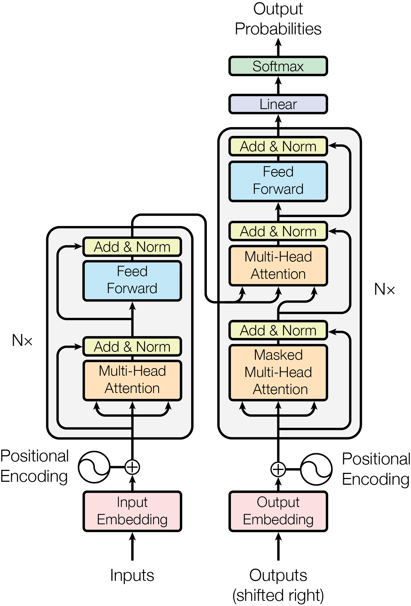

Transformer Architecture
The Transformer is a neural network architecture designed to model relationships in sequences without using recurrence (RNNs). It relies entirely on attention mechanisms to transform input sequences into richer and more meaningful representations.
// HISTORY
In 2015, researchers began using additive and multiplicative (Luong) attention alongside RNNs. By 2017, the Google "Transformer" team introduced self-attention, completely removing RNNs and introducing masked self-attention for autoregressive generation. OpenAI later extended this into decoder-only models, removing the encoder and cross-attention entirely.
// BRIEF_ARCHITECTURE

_source: Attention is All You Need
Attention Mechanism

// CORE_COMPONENTS
Attention Mechanism
Attention is the core idea where each token is projected into three vectors: Query (Q), Key (K), and Value (V). The model computes how much each token should “attend to” others by comparing queries to keys and mixing values accordingly.
Multi-Head Attention repeats this process across several attention heads, allowing the model to capture different types of relationships in parallel.
Tokenization Strategies
A way of representing words in compact form for efficient computation. Common strategies include:
- Character-level and Word-level tokens.
- Subword tokens (BPE, WordPiece, SentencePiece) — these handle rare words efficiently and are most widely used today.
Positional Encoding
Since Transformers process tokens in parallel, position must be tracked. Methods include Absolute, Relative, and RoPE (Rotary Positional Embedding). RoPE rotates Q and K vectors in multi-dimensional space using frequency-based rotation matrices rather than full sinusoidal cycles.
// ARCHITECTURE_DYNAMICS
The Encoder
Designed for deep context, enabling tasks like NER and QA. It uses bidirectional attention, allowing tokens to attend to all others in the sequence.
The Decoder
Uses masked self-attention to prevent seeing future tokens during training. GPT-style models use only stacked masked self-attention blocks, removing cross-attention entirely.
// UTILITY_LOG
- Parallelism: Faster training than RNNs.
- Global Receptive Field: Every token sees the entire sequence.
- Scalability: Scales extremely well with data and compute.
- General-Purpose: Works for text, vision, audio, and multimodal tasks.